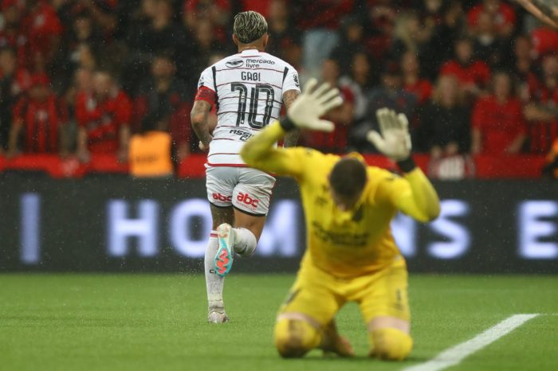

Sofrido
Em 13 de Julho de 2023 - 18:00 No jogo, marcado pelo lance do gol anulado de Gabigol pelo VAR, que até mesmo torcedores de outros times se indignaram, o Flamengo venceu o Athletico por 2 a 0, na noite desta quarta-feira, pela partida de volta das quartas de final, e se classificou para a semifinal da Copa do Brasil, onde vai enfrentar o Grêmio, ainda sem data definida. O time de Jorge Sampaoli já havia vencido o jogo de ida por 2 a 1 e assegurou a vaga. Os gols na Ligga Arena foram marcados por Erick, contra, e Gabigol.
-2 pontos...
Em 09 de Julho de 2023 - 15:40
Palmeiras 1x1 Flamengo - Sampaoli admite erro na estratégia e diferença de elencos expõe que o Flamengo poderia sair vencedor no Allianz.
Sampaoli tirou dois dos grandes responsáveis pela criatividade do time para colocar pontas de velocidade, Cebolinha e Luiz Araújo, que sairam jogando no time titular. A intensidade e as chances de contra-ataque não se confirmaram na prática. E nem a fragilidade do adversário pelos lados do campo.
No segundo tempo, Sampaoli colocou Everton Ribeiro, Arrascaeta e Bruno Henrique em campo, o time carioca foi superior e conseguiu o empate com Arrascaeta. O resultado deixou o Flamengo na vice-liderança. - GE.Globo